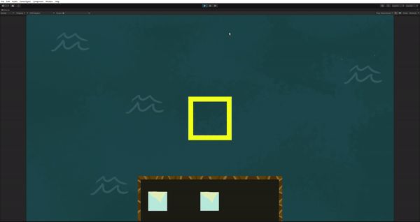
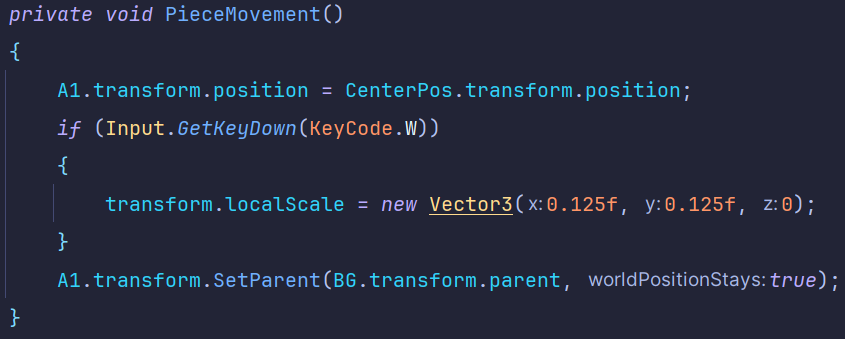
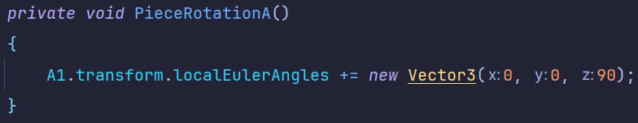
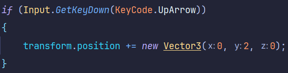
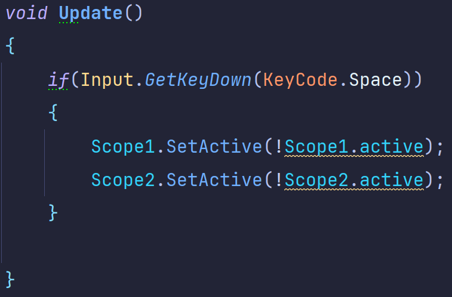

Vertical Slice
Project Status: Finished
Project Type: Group
Project Duration: 8 weeks
Software Used: Unity
Languages Used: C#
Primary Role(s): UI Programmer
Team: 4 devs, 4 artists
About Vertical Slice
Vertical Slice is a project in which we had to recreate 10 seconds from a game on a 1:1 scale. It marked the second collaboration between Artists and Developers.
My Features
- UI
- Map Movement
Intro
In this project i mainly focused on putting together the UI.
Together with one of the artists within our team i recreated the UI elements seen in the gameplay footage with sprites.
Closely inspecting the assets seen at Game UI Database.
When initiating the Carto project, our team, one of two groups, deliberated whether to build the scene from a 3D or 2D template.
Despite initial discussions, we decided on a 3D approach.
Unlike the other group, which started from a 2D template, we creatively simulated certain elements using perspective techniques.
The 10 seconds we had to recreate:

Development
The development of Carto was a little bit different than other projects i've previously worked on.
Since we already knew, and had a concrete visual of what we were tasked to create it was pretty straight forward.
At least until we've started discussing the technical side of things.
In the first week we made a trello and wrote down to-do's for each feature.
Then we held a stand-up to discuss who's going to be doing what.
As seen below, my contributions.
A canvas put together by me:

Since i was quick to put this together, not yet all art assets were available yet.
hencewhy i utilized placeholders or made them myself.
Tile Rotation

Here you see a map piece being rotated.
When pressing W, a map piece centers itself inside the scope.
It also remains as a child of the map once placed.
Code Snippets:
 
This is basically the logic behind what u just saw happening in the gif above.
The PieceMovement function transforms a map pieces' (A1) position, to the center position.
The PieceRotation functions either Add or Subtract a value of 90 to the objects' Z-axis, allowing it to rotate.
Conclusion
After completing the project, we received feedback from our teachers. While we got positive comments, their main critique highlighted the absence of audio— something we had overlooked. It made me realize that recreating even a short segment of a game involves more work than it appears on the surface. Despite the challenge, it was a valuable learning experience.
The final product

Our Vertical Slice of Carto
One of the best things i learned from this project is how to improvise when u don't know something. For example, it's not the 'Scope' that moves map pieces around. The map itself is litteraly moving instead.
mapMovement.cs

Repeat this 4 times for each arrow in the Update function.
And you've got movement.
And last but not least, scope.cs:
TL;DR - Work smarter, not harder.